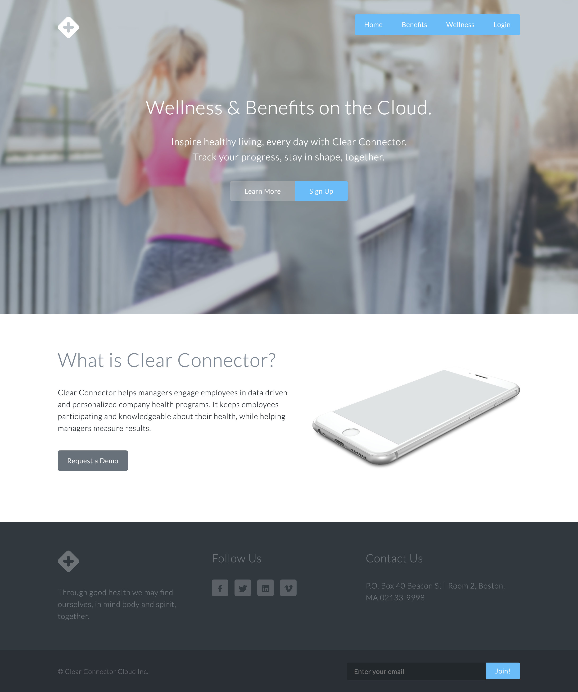
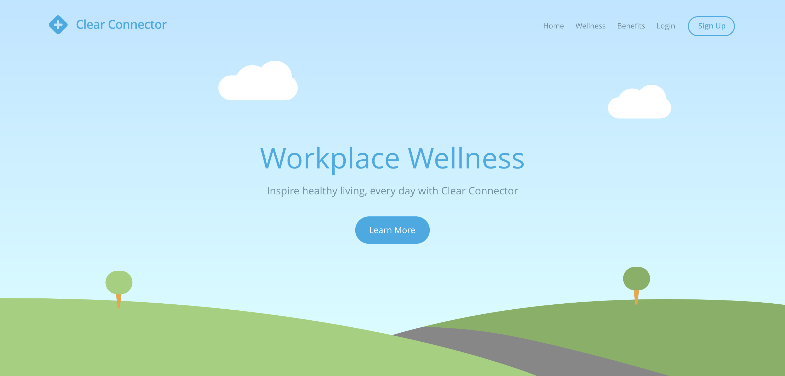

I designed the logo above for Clear Connector. I also created a design for the website, but we ended up customizing a wordpress theme instead.

Above is the design I started working on before we decided to customize a third party wordpress theme.

Above is a vector concept I was working on. My plans were to make moving skies, and little people running, biking to communicate healthiness through outdoor activies.